A prison deck that draws two cards a turn from behind a wall nobody can attack through. The commander is an artifact, not a creature, which is the whole trick: the lock pieces that switch off everyone else's board leave Shorikai untouched. The engine 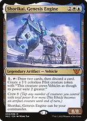Shorikai, Genesis Engine{1} and tap: draw two, discard one, and make a Pilot. Note it is a VEHICLE, so it is not a creature until you crew it — which means the symmetrical creature hate below never turns it off. Uncrewed, it is an artifact that quietly outdraws the table. 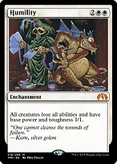Humilityevery creature becomes a vanilla 1/1. Their commanders, their engines, their blockers — all blank. Shorikai is not a creature, so it keeps drawing. This is the single most important card in the deck and the reason Humility is worth a Game Changer slot. 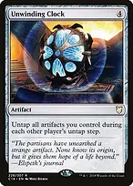Unwinding Clockuntaps Shorikai on every opponent's turn too. Four activations a round instead of one, at instant speed. 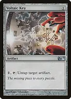Voltaic Keythe cheap version of the same idea — untap Shorikai and draw two more. 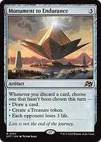Monument to Endurancethe discard from Shorikai stops being a cost. Every card you pitch drains an opponent. The wall 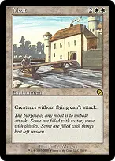Moatcreatures without flying cannot attack you at all. Against three green and red decks this frequently reads "you cannot lose". Ghostly Prisontaxes what Moat does not stop. In a four-player game a tax is a deterrent, not a speed bump — they attack whoever did not play one. 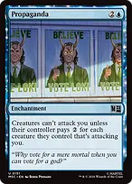Propagandathe second copy. You want to draw one of these early, so the deck runs both. 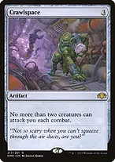Crawlspacecaps the swing at two creatures regardless of what they pay. 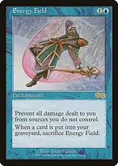Energy Fieldno damage to you at all, until something hits your graveyard. Greater Auramancy protects it, and Rest in Peace means your own graveyard stays empty. 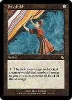Forcefieldthe backup when a single enormous attacker gets through. 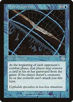Web of Inertiathey can only attack you by exiling cards from their graveyard — which, with Rest in Peace out, is nothing. Stopping the spells Rule of Lawone spell per turn each. This is the half of the lock that most decks cannot play through. 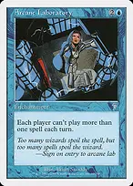Arcane Laboratorythe redundant copy, so you assemble it more often. 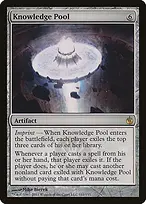Knowledge Poolwith either of the two above, nobody casts anything again. They cast from hand, it gets exiled, and the one-spell limit stops the free replacement. This is why the deck is Bracket 3.5 and not Bracket 3. 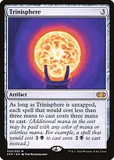Trinisphereeverything costs at least three. Brutal against the cheap interaction that would otherwise answer your lock pieces. 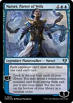Narset, Parter of Veilsone draw per turn for them, while you draw two every turn. Also shuts off wheels. 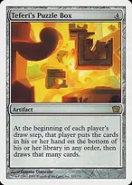Teferi's Puzzle Boxpairs with Narset — they shuffle their hand away each turn and are allowed to draw exactly one card back. Switching off their board 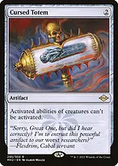Cursed Totemno activated abilities from creatures. Mana dorks, sacrifice outlets, tutor creatures — all off. Shorikai's ability is on a VEHICLE, so yours still works. 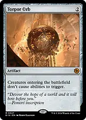Torpor Orbno enter-the-battlefield triggers. The most common way a table breaks out of a prison is a value creature; this removes it. Grafdigger's Cagenothing comes back from a graveyard or a library. 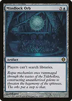Mindlock Orbnobody searches. Tutors, fetchlands and ramp all stop. 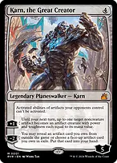Karn, the Great Creatortheir artifacts stop working, and yours become whatever you need. How you actually win 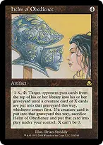Helm of Obediencewith Rest in Peace on the battlefield, activating for one exiles an opponent's entire library. Repeat for each opponent. This is the deck's kill, and both halves are cards you were happy to run anyway. Rest in Peacethe other half — and it is not a combo piece you are embarrassed to draw, since it also turns on Energy Field and Web of Inertia and blanks every graveyard deck at the table. 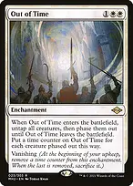Out of Timea wrath that leaves your board alone, because your board is artifacts. Supreme Verdictthe same job, uncounterable, for when a creature deck gets ahead before the wall is up. Finding the piece you need 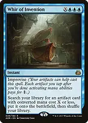Whir of Inventioninstant speed, improvise off your own artifacts, fetches any of Helm, Cursed Totem, Torpor Orb or Trinisphere. 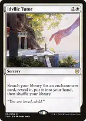Idyllic Tutorthe enchantment half — Humility, Moat, Rule of Law, Rest in Peace. 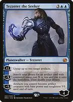Tezzeret the Seekeruntaps artifacts, and the minus finds any artifact and puts it straight onto the battlefield. 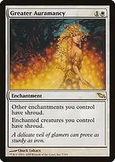Greater Auramancyprotects Humility, Moat and Energy Field from the removal aimed at them. What to keep in an opening hand Look for one wall and one draw source, in that order. A hand with Moat or Ghostly Prison plus a rock is far better than a hand of expensive lock pieces you cannot deploy. Shorikai does NOT need to resolve early. It is four mana of pure card advantage that gets better later; the walls are what stop you losing while you find it. Rule of Lawdeploy this BEFORE Knowledge Pool. The other order lets them empty their hand for free in response. Humilityhold it until their board actually matters. It is symmetrical for everyone but you, and casting it into an empty board wastes the surprise.